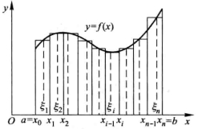

在本章中，作图比较重要，作出了函数的大致图形就已经成功了一半。

（ $\lambda=max(\Delta{x_1},\Delta{x_2},...,\Delta{x_n})$ ）
求函数图形的面积，应用元素法即可求出。
（注意：
1.直角坐标系下求面积的时候比较一下按y轴分割求起来方便还是按x轴分割求起来方便
2.极坐标系下分割成小扇形）
求体积，分割成面积元应用元素法即可求出。
求弧长，分割成线元用元素法即可求出。
直角坐标系下：弧长 $\displaystyle l=\int_\alpha^\beta\sqrt{1+y'^2} \ dx$
极坐标系下 ： 弧长 $l=\displaystyle \int_\alpha^\beta\sqrt{\rho^2(\theta)+\rho'^2(\theta)} \ d\theta$
变力做功，（ $W=F \cdot x$ ）用元素法分别计算出每一小段距离上做的功再求和求极限即可求出做的功。
水压力，（ $F=p \cdot s$ ， $p=\rho g h$）也是元素法，按深度分割，求和求极限。
引力，（ $F=G\frac{m_1m_2}{r^2}$ ）一般是求一个质点和另一不可看成质点的物体之间的引力。同样使用元素法求出非质点物体每一个小部分对质点的引力，再求和求极限。